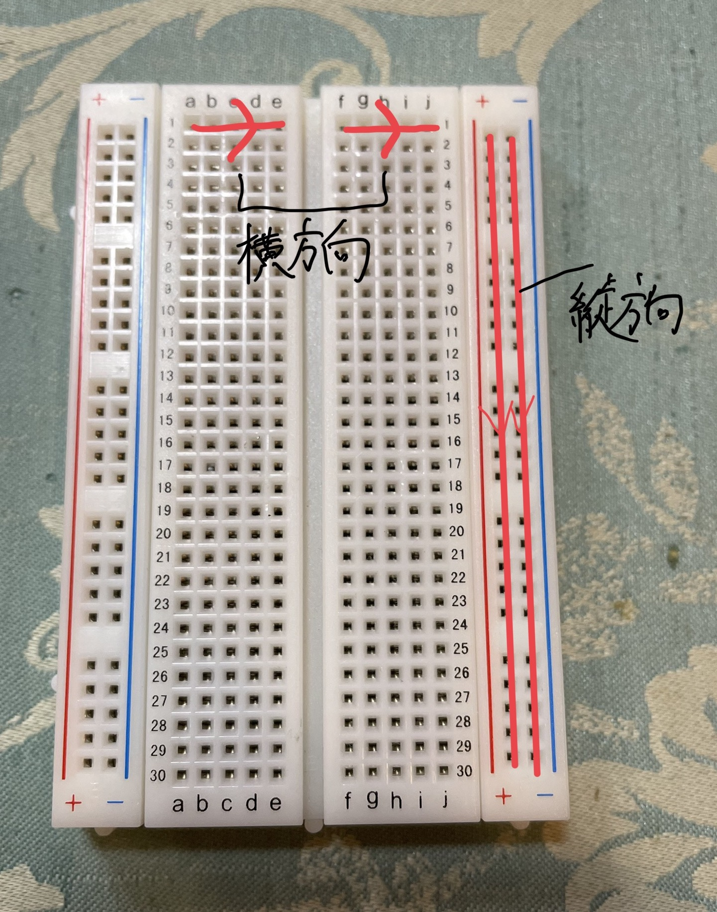
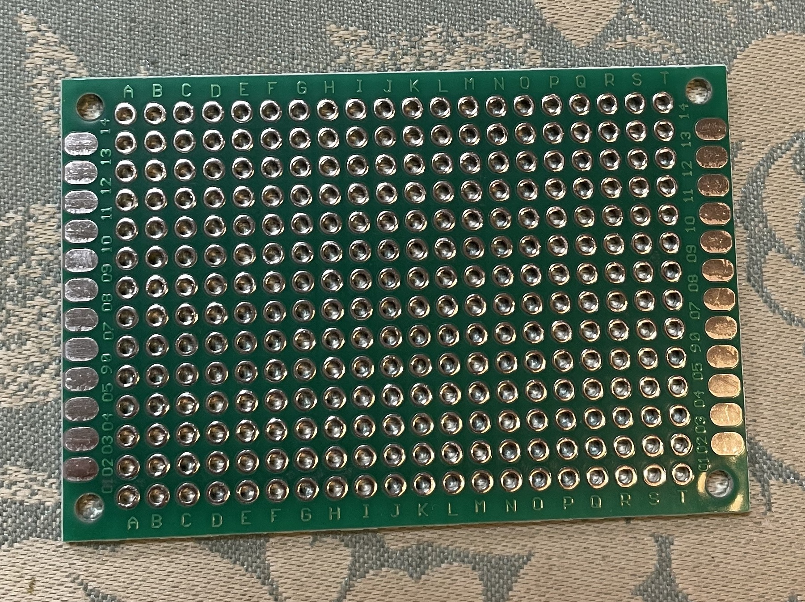
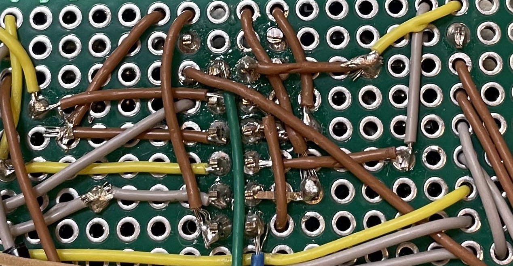
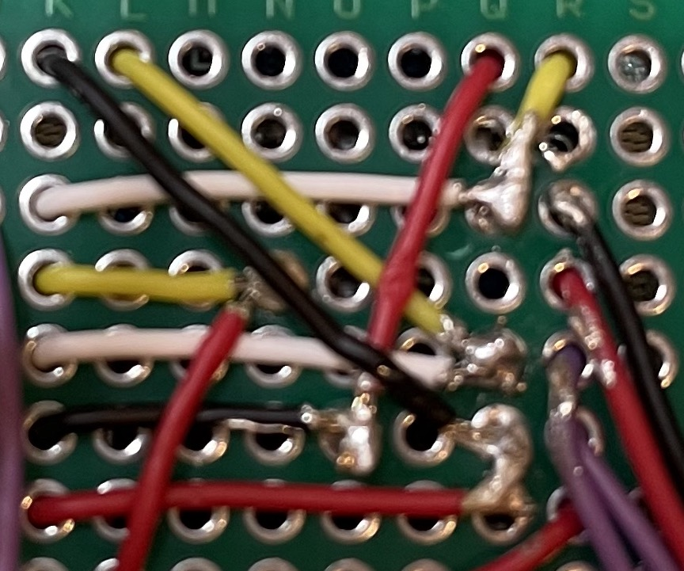
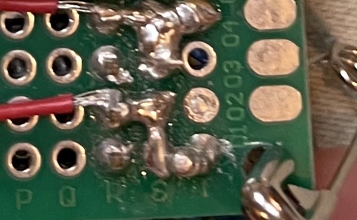
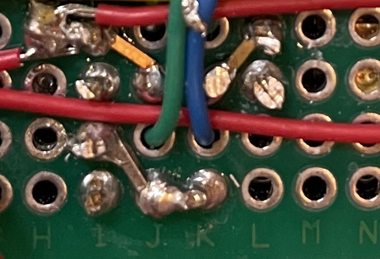
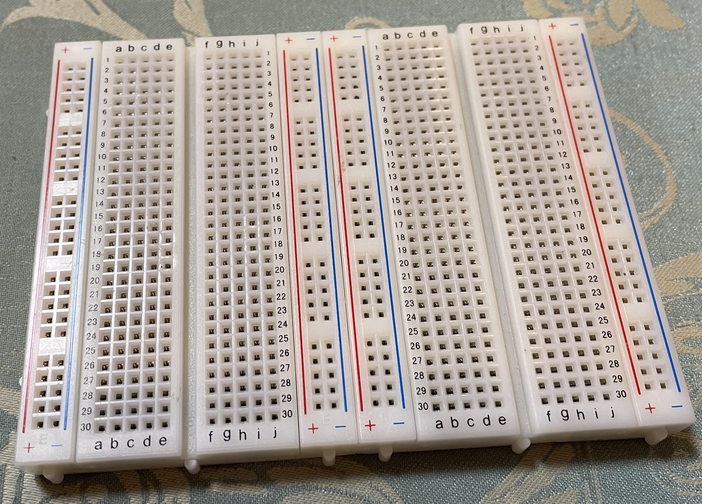
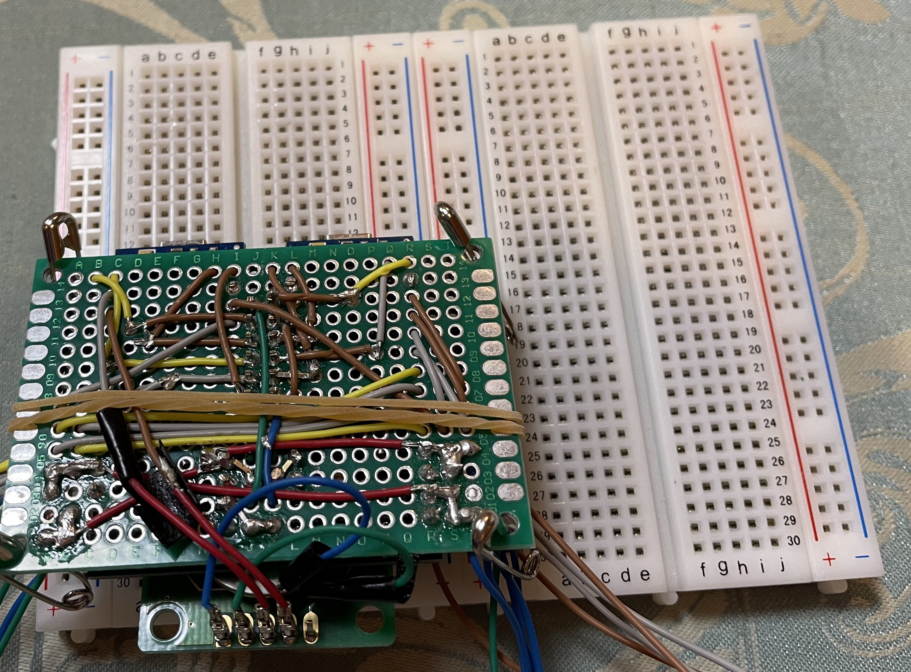

Hello!
まず ブレッドボード についての復習。

・真ん中の部分は横方向にそれぞれ繋がっている。
・＋とーの部分は、縦方向に繋がっている。
・メリットは配線が 簡単 、デメリットは無駄が多いことが挙げられる。
それでは ユニバーサル基盤 を見ていく。

・ユニバーサル基盤はそれぞれの穴が独立して存在している。
・そのため、スペースの無駄が省けたり、配線の 自由度 が上がったりする。
・その一方で、配線の難易度が上がるデメリットもある。
ユニバーサル基盤を使用した際に、行なった配線のパターンを記載する。

・モジュールとマイコンを接続する際に、ピンとワイヤーを使用した。
・さらに中継ぎにもワイヤーを使用した。
・半田付けする箇所が三箇所もあり、ゴチャゴチャしてしまった。

・現在、上記の反省を踏まえ、別の配線方法で試作している。
・ピンを使用せずに、ワイヤーのみで配線に挑戦している。
・それにより、半田付けする箇所が一箇所でよくなった。
・また、パターン１よりも見た目がスッキリした。

・これはーと＋の箇所を増やす配線方法である。
・＋とーのピンは少ないにもかかわらず、とても多く使用する。
・そのため、増やすことが必要不可欠である。
・ハンダを繋げてしまうことによってその問題をクリアした。

・最後は斜めの箇所を繋げる方法である。
・斜めの関係は、半田で繋げるには遠く、ワイヤーでは近すぎるという問題がある。
・そのため、ヘッダピンを短くして使用したところ、上手く解決した。
ユニバーサル基盤を使用したことで、

この大きさだったものを、

ここまで、縮小することに成功した。
しかしさらに、三分の一以下の大きさにできると考えている。
それは、プリント基盤やフレキシブル基盤を使用することによって可能である。
まだまだ学習すべきことだらけである。
Fin.